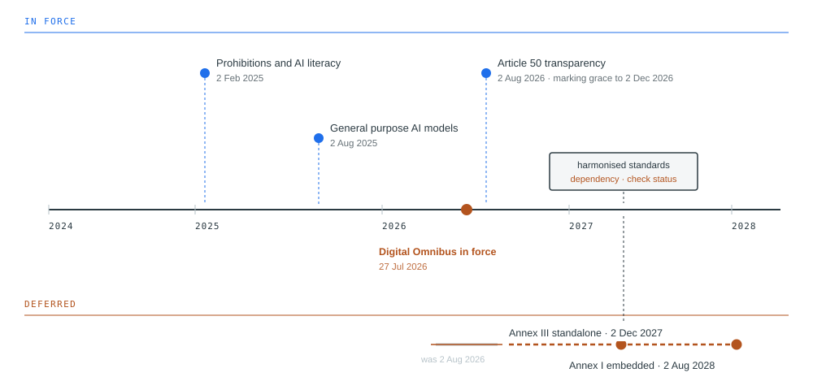

2. The Regulatory Landscape
The European Union’s AI Act is the most comprehensive law written specifically for artificial intelligence anywhere in the world. It sorts systems by how much risk they present, bans a few outright, and imposes substantial obligations on those it calls high risk, a category that includes AI used in hiring, lending, healthcare, and education. Section 2.5 sets out what it requires. It was adopted in 2024, and the obligations were scheduled to arrive in stages.
On 24 July 2026, the European Union published a regulation amending that Act. Nine days before its most significant deadline was due to take effect, the deadline moved by sixteen months.
Organizations had spent two years preparing for 2 August 2026. Some had built compliance programmes against it, hired against it, and committed budget to it. Others had read the Commission’s November 2025 proposal to defer and concluded that the deadline would not hold, and had slowed down. When the amending regulation entered into force on 27 July, both groups discovered they had been wrong in the same way. The first had treated a date as a certainty. The second had treated a proposal as a decision. Neither had treated the date as what it was, which was one input to a plan that should have been able to absorb its movement.
That is the most useful thing this chapter has to teach, and it is worth stating before the substance rather than after. What follows is an accurate account of the obligations in force as of August 2026. Parts of it will be wrong by the time you read it. The skill this chapter is trying to build is not memorization of a compliance calendar but the ability to work out, for a system in front of you, which regimes reach it and what they demand, and to notice when that answer changes.
What you will be able to do
- Determine which regimes apply to a described system, across privacy, discrimination, consumer protection, and AI-specific law
- Explain what Article 22 restricts, what it permits, and what makes human involvement meaningful
- Describe how conformity is demonstrated under the EU AI Act, and why the standards machinery determines what is actually required
- State the position of United States federal and state law without overstating its stability
- Distinguish what ISO 42001 certification demonstrates from what the AI Act requires
2.1 Privacy law reaches AI first
Before any AI-specific regulation existed, privacy law already applied, and for most organizations it remains the regime that bites soonest. AI systems process personal data at training, at inference, and in their outputs.
The European Union’s General Data Protection Regulation applies wherever personal data of people in the EU is processed, regardless of where the processing happens. Four of its requirements press directly on how AI is built.
A lawful basis is required, and six exist, and AI development typically reaches for consent or legitimate interests. Consent must be specific and informed, which means that consent obtained for providing a service does not cover training a model on the resulting data unless that use was disclosed. Legitimate interests requires a legitimate interests assessment, a documented weighing of the organization’s interest against the individual’s rights and expectations, and regulators have been sceptical of it where the processing has significant effects on people. The assessment has three parts: identify the interest, show the processing is necessary to achieve it rather than merely convenient, and demonstrate that the individual’s interests do not override it. Where the answer to the second part is that the model would work slightly better with the data, the assessment usually fails.
Data minimization requires that only data which is adequate, relevant, and necessary be collected. This sits in unresolved tension with machine learning, where more data generally produces better models, and no amount of careful drafting dissolves the tension. What it requires in practice is that each category of data be justified against the specific purpose rather than collected because it might prove useful.
Purpose limitation constrains reuse. Data collected for one purpose may not be processed for an incompatible one. Whether training a model counts as compatible reuse depends on the relationship between the purposes, what people would reasonably expect, and what safeguards apply. Using service transcripts to improve the service that generated them is more defensible than using them to train something unrelated.
Data subject rights create difficulties specific to AI. Access means telling a person whether their data was used in training and what has been inferred about them. Rectification means correcting inaccurate data, but correcting a record does not remove its influence from a model already trained on it. Erasure raises the same problem more sharply. The data is gone from storage; its effect on the parameters is not. Whether erasure obliges retraining is unsettled, and organizations should document the position they have taken rather than hoping the question does not arise.
2.2 Article 22 in depth
One provision deserves extended treatment because it governs the situations where AI most directly determines what happens to a person.
GDPR Article 22 gives a person the right not to be subject to a decision based solely on automated processing, including profiling, which produces legal effects concerning them or similarly significantly affects them. Three elements determine whether it applies.
The first is whether the decision is solely automated. If a person is meaningfully involved, the article does not engage. Everything turns on what meaningfully means, and regulators have been clear that involvement which is nominal does not count. A reviewer who approves whatever the system produces has not removed the decision from the article’s scope.
What distinguishes real involvement from nominal involvement is observable. Real involvement means the reviewer has authority to reach a different conclusion, has access to information beyond the system’s output, has time proportionate to the decision, and actually reaches different conclusions in some proportion of cases. Nominal involvement shows the opposite signature: approval rates approaching unity, review times too short for the information to have been read, no access to anything the system did not surface, and performance measures that reward agreeing with the system. That last one is the most reliable indicator and the least often examined. Where a reviewer is measured on throughput and overriding requires written justification, the organization has designed nominal involvement whatever its policy says.
The second is whether the effect is legal or similarly significant. Legal effects are those that change someone’s legal position: a contract terminated, a benefit refused, a licence withdrawn. Similarly significant effects are those with comparable practical weight, which clearly includes credit, employment, insurance, and access to education or essential services. Online advertising generally does not reach the threshold. Content moderation is contested, and the answer probably depends on what the platform is to the person affected.
The third is the set of exceptions. Solely automated decisions with significant effects are permitted where necessary for a contract, authorized by law, or based on explicit consent. Even then, safeguards are mandatory: the right to obtain human intervention, to express a point of view, and to contest the decision. An exception permits the automation; it does not remove the recourse.
For FAIRLEND, working this properly is instructive. Meridian’s model scores applications and a loan officer approves or declines. On paper this is not solely automated. Now check the signature. If officers agree with the model in 97 percent of cases, if the average review takes forty seconds, if the officer sees the score before the application, and if departing from the model requires a memo that a supervisor reviews, then Meridian is making solely automated decisions with a person present. The article applies, no exception has been claimed, and the safeguards do not exist. Nothing about that conclusion required examining the model.
2.3 Anti-discrimination law
Laws prohibiting discrimination were written long before AI and reach it without amendment.
In the United States, Title VII covers employment discrimination on the basis of race, colour, religion, sex, and national origin, with the Americans with Disabilities Act and the Age Discrimination in Employment Act extending coverage. The Equal Credit Opportunity Act covers credit, and the Fair Housing Act covers housing. Two theories matter, and the second is the one that reaches AI.
Disparate treatment is intentional differential treatment on a protected basis. Few AI systems take a protected characteristic as an input, so direct claims are uncommon.
Disparate impact is a neutral practice that disproportionately disadvantages a protected group. No intent is required.
Such a practice is unlawful unless the employer shows it is job-related and consistent with business necessity, and even then the plaintiff may prevail by identifying a less discriminatory alternative that serves the same interest.
This is the doctrine that catches machine learning, and the mechanism is worth being precise about. A model that never sees race can still produce racially disparate outcomes, because other variables carry the information. Postcode correlates with race in most American cities because of a documented history of segregation in housing policy. Name carries information about ethnicity. The gaps in an employment record carry information about caregiving and therefore about sex. Purchasing patterns carry information about almost everything. Removing the protected variable removes the label, not the signal, and a model trained to find predictive structure will find the proxies whether or not anyone intended it to.
For TALENTSCREEN, this produces the most commonly misunderstood point in the chapter. Calloway bought the tool. The vendor built it, trained it, and holds the information about how. If the tool produces disparate impact in Calloway’s hiring, Calloway is the employer and Calloway is liable. The vendor may have contractual exposure to Calloway. It has no exposure to the applicant. Liability does not transfer with the purchase, and this is what makes vendor due diligence a legal obligation rather than good practice.
Some jurisdictions have added AI-specific procedural duties on top. New York City requires an annual independent bias audit of automated employment decision tools, with results published and candidates notified before use. Illinois regulates AI analysis of video interviews through notice and consent requirements. Verify the current form of these before relying on them.
2.4 Consumer protection, liability, and intellectual property
Three further bodies of law reach AI without naming it.
Consumer protection law is the first. The Federal Trade Commission Act prohibits unfair and deceptive practices, and state equivalents do the same. Deception covers claims about what a system does, including describing a process as human-reviewed when it is not, and overstating accuracy in marketing. Unfairness covers substantial injury that consumers cannot reasonably avoid and that is not outweighed by benefits. The remedy worth knowing about is algorithmic disgorgement, in which the FTC has required companies to delete models trained on improperly obtained data. That converts a data governance failure into the destruction of the asset the data was collected to build, which changes how the risk should be priced.
Product liability is the second, and how it applies to AI is still being worked out. The doctrine distinguishes three kinds of defect: a manufacturing defect, where one unit departs from its design; a design defect, where the design itself is unreasonably dangerous; and a failure to warn. None of the three maps cleanly onto a system whose behaviour emerges from training rather than from a specification someone wrote. The European Union has revised its Product Liability Directive to bring software within scope, and the movement is toward making claims easier to bring rather than harder.
Intellectual property is the third, and it raises two separate questions. Whether training on copyrighted material is infringement or fair use is being litigated and is not settled. Whether AI-generated output attracts copyright depends on human authorship, and purely machine-generated work generally does not qualify, which means content produced this way may not be protectable. Practical governance here consists of documenting the provenance of training data, understanding what vendor indemnities actually cover, and setting policy on what may be produced with these tools and how it is marked.
2.5 The EU AI Act
The AI Act is the most comprehensive AI-specific regulation in force. It regulates by risk tier rather than by sector, and it allocates duties by role.
Some practices are prohibited outright. These include manipulative techniques that cause significant harm, exploitation of vulnerability, social scoring by public authorities, certain uses of real-time remote biometric identification in public spaces, emotion inference in workplaces and educational settings, and untargeted scraping to build facial recognition databases. The July 2026 amendments added prohibitions covering AI-generated non-consensual intimate imagery and child sexual abuse material.
High-risk systems are permitted, subject to substantial obligations. Two routes into the category exist. Annex I covers AI that is a safety component of a product already regulated under EU product legislation, such as medical devices and machinery. Annex III lists standalone applications including biometrics, critical infrastructure, education, employment, essential public and private services including credit, law enforcement, migration, and justice. All three running cases in this book land here.
The obligations on a high-risk system are a risk management system operating across the lifecycle rather than at a point in it, data governance covering training, validation, and testing data, technical documentation sufficient for an authority to assess conformity, automatic logging, transparency to the deployer, human oversight designed in rather than asserted, and appropriate accuracy, robustness, and cybersecurity.
Limited-risk systems carry transparency duties under Article 50: disclosure when a person is interacting with an AI system, disclosure of emotion recognition and biometric categorization, and marking of AI-generated content in a machine-readable form.
General purpose AI models are regulated separately from the tier system, with documentation, downstream information, copyright policy, and a published summary of training content. Models presenting systemic risk carry additional evaluation, mitigation, incident reporting, and cybersecurity duties.
Duties attach by role.
A provider develops an AI system and places it on the market. A deployer uses one in the course of a professional activity.
Providers carry the design and conformity obligations; deployers carry obligations of use, oversight, monitoring, and informing affected people. Calloway is a deployer of TALENTSCREEN. Northfield is both a provider and a deployer of MEDASSIST, because it built the system it uses. An organization that fine-tunes a purchased model, or puts its own name on it, may become a provider of a system it did not originally build.
2.6 The Digital Omnibus amendments
The timeline as originally enacted was staged. Prohibitions and the AI literacy obligation applied from 2 February 2025. General purpose model obligations applied from 2 August 2025. High-risk obligations were due on 2 August 2026.
That last date did not hold, and the reason matters more than the fact.
By late 2025 the implementation machinery was visibly behind. Member states had not all designated national competent authorities. More consequentially, the harmonized technical standards being developed by the European standardization bodies were not finished. Those standards are the practical route to demonstrating compliance, and without them organizations faced obligations stated in general terms with no agreed benchmark for meeting them.
The Commission proposed targeted amendments in November 2025. Negotiations were difficult, with an initial trilogue in April 2026 ending without agreement. Provisional agreement came in May, the Parliament endorsed the text in June, the Council approved at the end of that month, and the amending regulation was published on 24 July 2026 and entered into force on 27 July.
The deferrals are substantial. Standalone high-risk systems under Annex III now have until 2 December 2027. High-risk AI embedded in regulated products under Annex I has until 2 August 2028.
Reading only that summary produces a serious error, because several things did not move. The Article 50 transparency obligations applied from 2 August 2026 as originally scheduled, with a narrow transitional provision giving generative systems already on the market until 2 December 2026 to meet the machine-readable marking requirement. Systems entering the market after August had no such grace. The prohibitions have been in force since February 2025 and were extended rather than relaxed. General purpose model obligations have been in force since August 2025. And the supervisory powers of the EU AI Office were broadened.
The lesson for practice is the one the chapter opened with. The obligations did not change; the time to prepare for them did. An organization that stopped work on reading the proposal has lost sixteen months it will need.

Read the figure as two bands. The upper band shows obligations already in force, and it is longer than most summaries of the deferral imply. The lower band shows what moved. Notice that the deferral applies to one category, high-risk conformity, and that everything else on the chart either never moved or moved by four months rather than sixteen. Notice also that the marker for harmonized standards sits before the deferred deadline rather than after it, because a conformity obligation without an available standard is an obligation nobody can discharge, and that dependency is what produced the deferral. An organization reading this chart in 2027 should check the standards marker first, because if it has moved again, so will everything to the right of it.
2.7 Conformity assessment and why it decides everything
Legislation of this kind states requirements in general terms because it must apply across every sector and outlast the technology it regulates. The AI Act says training data must be sufficiently representative and that systems must achieve appropriate accuracy. It does not say how representativeness is measured or what level of accuracy counts as appropriate. Something has to supply that specificity before anyone can comply, and what supplies it turns out to matter as much as the legislation itself.
Conformity assessment is the process of establishing that a system meets the requirements. For most standalone high-risk systems the provider may assess internally, evaluating its own system against the requirements and documenting the result. For some systems, notably certain biometric applications, and for high-risk AI inside products already subject to third-party assessment, a notified body must be involved. Notified bodies are independent organizations designated by member states to perform this function.
Harmonized standards are the bridge. Developed by the European standardization organizations at the Commission’s request and cited in the Official Journal, they translate the Act’s general requirements into specific technical practice.
A provider that conforms to a harmonized standard receives a presumption of conformity with the requirement that standard addresses: the requirement is treated as met, without further proof.
Deviation is permitted, but it shifts the burden: the provider must then demonstrate compliance by other means, which is more expensive and more contestable.
Once conformity is established the provider draws up an EU declaration of conformity, affixes CE marking, and registers the system in an EU database before placing it on the market.
This machinery explains the deferral. The standards were not ready, so the presumption of conformity was not available, so the obligation could not be discharged in the way the legislation contemplated. The standardization bodies responded by accelerating their process, permitting direct publication after a positive enquiry vote rather than requiring a separate formal vote. Whether the standards are cited in the Official Journal by the time you read this is the single most useful thing to check about the current state of the Act.
2.8 What ISO 42001 does and does not do
ISO/IEC 42001 is a management system standard, which is a particular kind of document and worth understanding before assessing what it is good for. It does not say how an AI system should behave. It says what an organization must have in place to manage AI deliberately rather than incidentally: a stated policy, assigned responsibilities, a process for identifying and treating risk, objectives that can be measured, internal audit, and periodic review by management. Its close relatives are ISO 9001 for quality and ISO 27001 for information security, and it works in the same way. An accredited body examines the organization against the standard and, if satisfied, certifies it. That certificate is meaningful. It tells a customer or a regulator that an independent examiner found a systematic approach rather than an improvised one.
Organizations frequently treat that certificate as the route to AI Act compliance. It is not, and the reason is conceptual rather than a matter of coverage.
The ISO catalogue in this area has grown substantially. Beyond 42001 and the terminology standard 22989, recent additions address impact assessment, requirements for the bodies that audit and certify management systems, conformity assessment schemes, transparency taxonomy, explainability, and environmental sustainability, with further work on AI cybersecurity and testing. The impact assessment standard bears directly on how impact assessments are defined and conducted, and the certification-body standard is what makes certification against 42001 mean anything at all. Verify publication status before relying on any of them.
But the European standardization committee working on AI Act standards has stated that ISO/IEC 42001 does not cover all the quality management requirements the Act imposes, and a separate European standard is being developed to fulfil the complete set.
The reason is a difference in subject. ISO/IEC 42001 is a management system standard in the tradition of ISO 9001 and 27001, and management system standards manage risk to the organization. The AI Act’s risk management provisions manage risk to people outside the organization, who are not the standard’s customer and have no relationship with the certified body. These are different accountability structures, and no mapping between clauses bridges them, because the gap is not in what is covered but in whose interests the system is designed to protect.
This is the argument of Chapter 1 reappearing in concrete form. A framework that treats the deploying organization as the entity whose risk matters will produce a well-run process that is silent about the person the system acts upon. Certification is worth having. It demonstrates that an organization has a systematic approach and that an accredited body has examined it. It does not demonstrate that the system is safe for the people it affects, and it should not be presented as though it does.
2.9 The United States
The United States has no equivalent standards machinery, and the document that fills the space is voluntary. The NIST AI Risk Management Framework was published in 2023 by the National Institute of Standards and Technology at the direction of Congress. It organizes the work into four functions. Govern establishes the policies, roles, and culture the other three depend on, and it runs across the whole lifecycle rather than sitting at one point in it. Map establishes the context a system operates in and identifies what could go wrong. Measure analyzes and tracks those risks using methods suited to each. Manage prioritizes them and acts.
The framework is descriptive rather than prescriptive. It says what an organization should attend to and leaves the thresholds to the organization, which is what makes it usable across sectors and also what limits it. There is no conformity assessment, no accredited body, and no certificate. An organization stating that it follows the AI RMF is making a claim that nobody outside it can check.
That is not a criticism of a document never built to be certifiable. It matters because the claim is made in procurement and in contracts as though it carried the weight of an ISO certificate, and it does not. The claim needs testing whenever a vendor offers the framework as evidence.
The United States has no comprehensive federal AI statute. What exists is a contest between federal executive policy seeking uniformity, an active and expanding body of state law, and congressional proposals that have not become law.
Federal executive policy shifted substantially in late 2025. Earlier direction emphasizing safety testing and civil rights protections was revoked. A December 2025 executive order on a national AI policy framework directed agencies to identify state AI laws considered inconsistent with national policy and to challenge them, and a litigation task force was announced in January 2026. A March 2026 framework directed Congress toward a unified federal approach and called for preemption of state AI law, with carve-outs including child safety, state government procurement and use, and AI infrastructure regulation.
Preemption, the displacement of state law by federal law, is not settled, and this is the practically important point. An executive order cannot by itself displace state law. Whether state AI laws are affected will be determined through litigation and possibly through federal legislation, and a bipartisan group of more than twenty state attorneys general has opposed the effort. State AI laws remain enforceable until preempted by statute or struck down by a court. Comply with them and monitor the contest.
Congress has become more active without legislating. A June 2026 bipartisan discussion draft would require frontier model developers to disclose model information and obtain third-party audits through designated verification organizations, and would preempt state laws regulating AI development for three years. That preemption is narrower than it first appears, reaching development activity rather than deployment or laws of general application.
Federal agencies continue applying existing authority within their domains regardless of the preemption question, because that authority rests on statutes rather than on AI-specific policy. The FTC acts under its consumer protection authority, the EEOC on employment, banking regulators through model risk management frameworks that predate AI, and the FDA on medical devices.
State legislation has developed along two tracks that reach different parties. The algorithmic discrimination track reaches deployers making consequential decisions about people, requiring reasonable care, impact assessments, disclosure, and notification. The frontier model track reaches developers of the largest models, requiring published safety frameworks covering internal governance, cybersecurity, and catastrophic risk thresholds, together with transparency reporting. California and Texas laws took effect in January 2026 and New York and Illinois laws take effect in January 2027. Verify current effective dates, several of which have been adjusted since enactment.
Colorado is the instructive case, and it is instructive for what happened to it rather than for what it required.
Colorado enacted SB 24-205 in May 2024, the first comprehensive state AI law in the United States. It imported the shape of the AI Act: duties of care on developers and deployers of high-risk systems, risk management programs, impact assessments, and obligations to prevent algorithmic discrimination across employment, housing, lending, insurance, health care, and education. Its start date slipped from February 2026 to June 2026. In April 2026 xAI sued to enjoin it on constitutional grounds, the Department of Justice intervened in support, and a federal magistrate stayed enforcement. On 14 May 2026 the governor signed SB 26-189, repealing SB 24-205 and replacing it with a narrower Automated Decision-Making Technology Act built on disclosure and individual rights rather than a duty of care. The replacement takes effect on 1 January 2027.
The original law never became operative. It was repealed before its own deferred start date arrived.
Two things follow that matter more than the details. An organization that built a Colorado compliance program in 2024 spent two years preparing for obligations that never applied, which is the failure this chapter opened with in a different jurisdiction. And any account describing Colorado’s duty of care in the present tense, including a course or a consultant, is describing something that does not exist. Check the current text before relying on any description of a state law, this one included.
2.10 Where the law runs out
Every regime in this chapter was drafted for systems that produce an output which a person then acts on. None was drafted for systems that act.
That does not leave agentic systems unregulated. The AI Act classifies by use and by risk rather than by architecture, so an agent that screens job applicants is high risk on exactly the same footing as a model that scores them, and TALENTSCREEN’s obligations do not change because its vendor added autonomy. The obligations attach. The difficulty is that several of them were written on an assumption that autonomy removes.
Article 14 is the clearest instance. It requires that high-risk systems be designed so a person can oversee them during use, and it names what oversight requires, including the ability to intervene or interrupt. For a scoring model a person sits between the output and the effect, and intervention means declining to act on a recommendation. For an agent that has already sent the message, moved the money, or rejected the candidate, intervention after the fact is not available, and oversight has to mean something else: constraining in advance what the agent may do, and being able to stop it mid-task. The Article does not say this, because the systems it was drafted against did not require it.
Article 12 has the same shape. It requires records enabling traceability of the system’s functioning, which for an agent means recording not only what was decided but under whose authority it acted. No current text says so.
Dedicated guidance is thin. Singapore’s Infocomm Media Development Authority has published a framework addressed specifically to agentic systems, the first from a national regulator, and it has been revised at least once, so check the current version before relying on it. In the United States NIST has published work adjacent to the problem, including guidance on post-deployment monitoring in March 2026, but nothing on the specific question. Its Center for AI Standards and Innovation launched an AI Agent Standards Initiative in February 2026, and its National Cybersecurity Center of Excellence issued a concept paper on agent identity and authorization the same month, which as of August 2026 remains a concept paper. There is no published NIST standard on agent identity, authorization, or accountability, and a governance function told otherwise has been told something inaccurate.
The practical position is uncomfortable and worth stating plainly. An organization deploying agents today carries obligations written for a different kind of system, with no authoritative guidance on how to meet them, and will be assessed against those obligations by an authority reasoning from first principles. The controls that follow from taking those obligations seriously anyway, and the logging Article 12 implies once you accept that authority, and not only action, has to be reconstructable, are developed later in the book.
2.11 Making this tractable
Reading the preceding sections in sequence suggests an impossible compliance burden. It is tractable, and the technique that makes it tractable is the subject of the next chapter.
Maintaining a separate compliance programme per regime does not scale, and it produces the situation where one system is assessed three times by three teams reaching three conclusions. The alternative is to classify each system once against an internal scheme, then maintain a mapping from internal classifications to the obligations each applicable regime imposes. When a regime moves, and this chapter has demonstrated that regimes move, the mapping rule is edited and every affected system is identified at once. The classifications survive untouched.
Case in focus: FTC v. Rite Aid
Between 2012 and 2020, Rite Aid deployed facial recognition across hundreds of United States stores to identify people it believed had previously shoplifted or behaved disruptively. Employees received match alerts and acted on them: following customers, searching them, calling the police, ordering them to leave.
The Federal Trade Commission’s complaint, filed in December 2023, describes a system deployed with almost no governance. Rite Aid did not test the technology’s accuracy before deploying it. Its first vendor disclaimed accuracy in the contract, in capital letters. The enrollment database was built from low-quality images, many from grainy security cameras and mobile phones. Between December 2019 and July 2020 the system generated more than five thousand match alerts in stores over a hundred miles from where the person had been enrolled, and a single enrollment produced more than nine hundred alerts across more than a hundred and thirty stores in five days.
The distributional facts are the ones to sit with. Roughly eighty per cent of Rite Aid’s stores were in areas with a plurality of white residents. Roughly sixty per cent of the stores equipped with facial recognition were in areas with a plurality of Black, Asian, or Latino residents. The technology was deployed where its errors would fall on people who were not the majority of the company’s customers, and nothing in the record indicates that anyone decided this. It indicates that nobody examined it.
The stipulated order, entered in February 2024, is the part to read closely. Within forty-five days Rite Aid had to delete all photographs and videos collected in connection with the system, and any data, models, or algorithms derived in whole or in part from them. Within sixty days it had to instruct third parties who had received that material to do the same. Facial recognition was prohibited for five years. The order runs for twenty.
Two features of that remedy deserve notice. It reaches the model rather than only the data, so the organization could not keep the asset built from improperly handled inputs. And it contains no exception for technical infeasibility, which an order against Ring the previous year had included. That earlier order required deletion of derived models unless such deletion was technically infeasible, a concession that model deletion may not be achievable in practice.
Every failure in the complaint is a control this book teaches. No problem statement establishing what the system was for. No assessment of the enrollment data. No accuracy testing before deployment and no fairness testing at any point. No deployment decision recording who accepted the risk. No monitoring that would have surfaced nine hundred alerts from one enrollment. No assessment of the vendor’s disclaimer.
One caution against reading a trend into this. In December 2025 the Commission set aside an order against Rytr, an AI writing tool, on the grounds that the alleged facts did not support a violation. No algorithmic deletion order has issued since Rite Aid. The remedy exists and is available. Whether it is currently being used is a different question, and a governance function that assumed either answer would be guessing.
Summary
Privacy law reached AI before AI-specific regulation existed and still governs most of what organizations do with data. Article 22 restricts solely automated decisions with significant effects, and whether human involvement is meaningful is determined by observable indicators rather than by whether a person is nominally present.
Anti-discrimination law reaches AI through disparate impact, which requires no intent. Removing protected characteristics from a model removes the label rather than the signal, because other variables carry the same information. Liability sits with the deploying organization regardless of who built the system.
The EU AI Act regulates by risk tier and allocates duties by role. Its high-risk obligations were deferred in July 2026, to December 2027 for standalone systems and August 2028 for embedded ones, but prohibitions, general purpose model duties, and transparency obligations all remain in force. The deferral happened because the harmonized standards that make conformity demonstrable were not ready, which is the clearest available demonstration that compliance depends on machinery as much as on legislation.
ISO/IEC 42001 certification demonstrates a systematic management approach. It does not demonstrate AI Act conformity, because a management system standard manages risk to the organization while the Act manages risk to the people the system acts upon.
United States law is a contest between federal preemption efforts and active state legislation. State law binds until preempted.
None of this is stable, and a programme built to survive its movement is worth more than a programme built to satisfy its current form.
Review questions
COMPREHENSION
Explain why an AI system that takes no protected characteristic as an input can still create liability under disparate impact doctrine. Name three variable types that commonly carry protected-characteristic information and say what each encodes.
What does certification against ISO/IEC 42001 demonstrate, and what does it not demonstrate? Explain the difference in terms of whose risk each framework is designed to manage.
APPLIED
A European bank uses an AI system to decline credit applications automatically below a score threshold, with all other applications going to a human underwriter. Analyze the declined population under Article 22. Which element is contested, what would you need to know, and what would you advise if the bank wishes to keep the automation?
Your organization deploys a customer-facing chatbot in the EU that was placed on the market in June 2026. Which AI Act obligations apply to it and from when? Explain why the answer is not simply that high-risk obligations were deferred.
SPOT THE RISK
- A company’s AI compliance programme consists of the following. A named EU AI Act workstream preparing for a 2027 deadline. A separate GDPR programme owned by the privacy office. A vendor questionnaire asking suppliers to confirm they comply with applicable law. An ISO 42001 certification project. No inventory of AI systems, on the reasoning that the workstreams will identify what falls within their own scope. Identify at least five defects and state what each makes impossible.
COMPARE AND DECIDE
- An organization must decide whether to pursue ISO/IEC 42001 certification now or to wait for the European quality management standard being developed for AI Act purposes. What does each option buy, what does each cost, and what facts about the organization would decide it?
RUNNING CASE
MEDASSISTNorthfield built its own deterioration prediction tool and uses it internally. Determine its role under the EU AI Act if it were operating in Europe, identify which Annex applies and why that choice is not obvious, and state what changes about its obligations compared with Calloway’s position onTALENTSCREEN.
Every obligation in this chapter attaches to a system, which presumes that somebody knows which systems exist. Most organizations do not. They have more AI than they can list, arriving through procurement, through platforms, and through employees who would not describe what they are doing as deploying anything. Producing that list and sorting it is unglamorous work, and it is the point at which a governance programme either becomes real or remains a document.